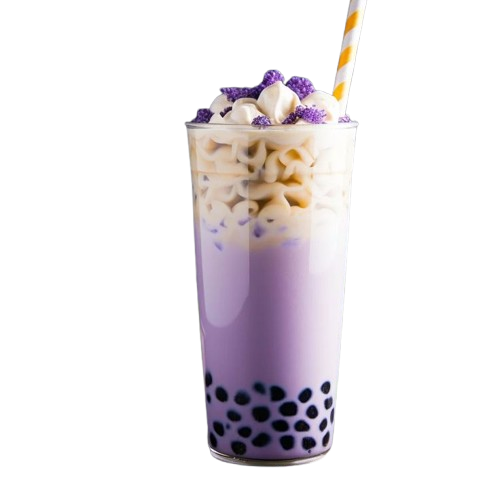

Taro atau talas adalah umbi yang memiliki rasa dan tekstur yang mirip dengan ubi putih, sedikit manis, dan renyah. Taro dapat digunakan untuk membuat makanan manis dan gurih, termasuk minuman. Minuman taro dapat membantu memenuhi kebutuhan serat harian karena taro terkenal dengan kandungan seratnya yang tinggi. Galau?? Cobain Es Taro Marshmellow Yukkkk segarnya bikin ngilangin badmood kamu.
